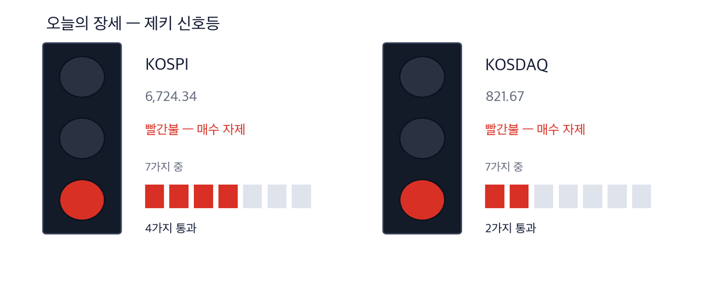
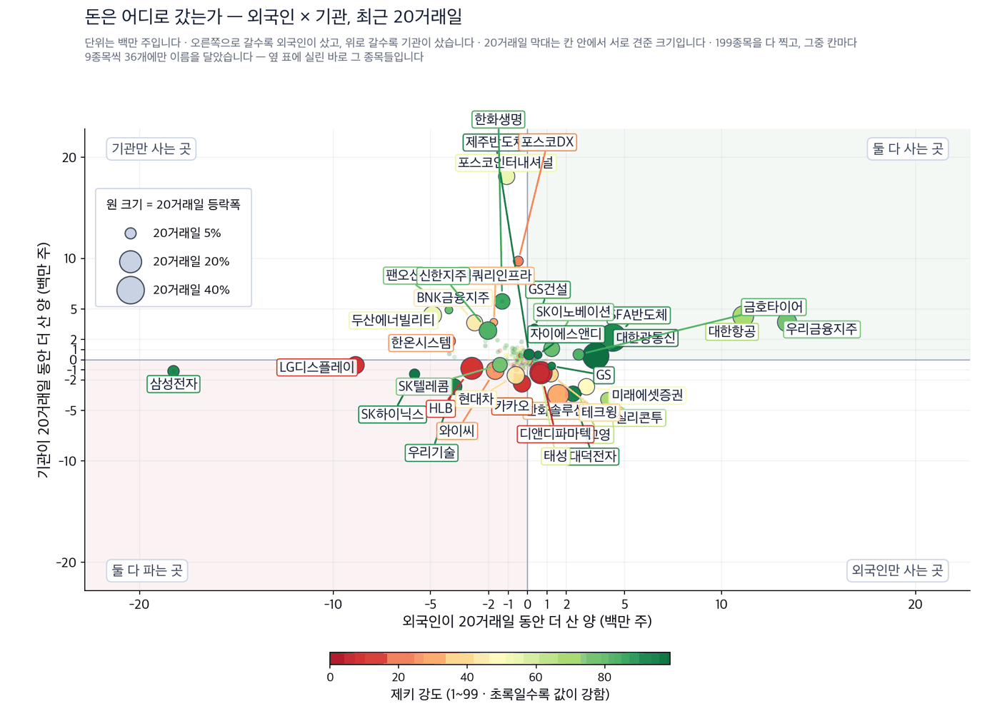
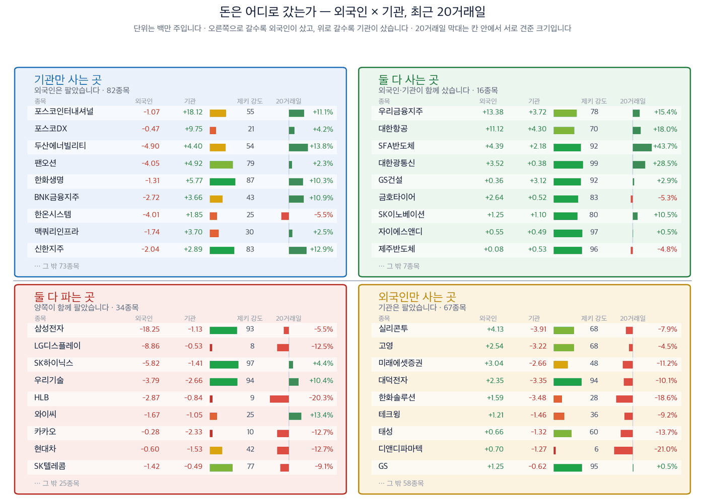

금리를 올린 다음 날, 서울에서 오른 곳은 은행과 광케이블이었습니다
2026년 9월 18일 · 값은 9월 17일 종가 기준입니다
신문에서 저희가 갖고 있지 않은 회사를 찾아, 왜 값을 할 수 있는지 숫자로 적습니다.
코스피 6,724.34 (+0.09%) | 코스닥 821.67 (+0.70%) | 나스닥 26,418 (+1.69%) | 미 국채 10년물 4.95% | 제키 신호등 빨간불 |

이 그림 읽는 법
| 켜진 등 | 오늘의 국면입니다. 초록은 매수 우위, 노랑은 관망, 빨강은 매수 자제입니다. |
| 채워진 칸 | 7가지 조건 중 몇 개를 통과했는지입니다. 칸이 많이 찰수록 시장 구조가 튼튼합니다. |
| 칸이 다 찼는데 노랑·빨강이면 | 다른 이유로 한 단계 낮춘 것입니다. 그림 아래에 그 이유를 적었습니다. |
제키 신호등은 시장 국면을 7가지로 재서 하나로 줄인 것입니다. 코스피와 코스닥이 모두 빨간불입니다. 코스피는 7가지 가운데 4가지, 코스닥은 2가지를 지났습니다.
실행 요약 — 결론부터 3가지
- 미국 중앙은행이 9월 16일 기준금리를 0.25%포인트 올렸습니다. 하루 뒤 뉴욕은 되돌렸고 나스닥은 1.69% 올랐습니다. 서울도 6,700선을 지켰습니다.
- 금리가 오르면 은행은 예금과 대출의 금리 차이가 넓어집니다. 지난 한 주 오름폭이 가장 큰 업종은 은행이었습니다. 우리금융지주는 저희가 재는 280종목 가운데 외국인 순매수 1위였습니다.
- 인공지능 데이터센터는 광모듈을 많이 씁니다. 두산이 광모듈용 소재 라인에 4,200억원을 넣기로 했습니다. 그 수요가 주가와 수급에 먼저 나타난 곳은 대한광통신입니다.
그래서 어떻게 하나: 개장 30분 동안 은행주와 광케이블주 가운데 어느 쪽에 거래가 몰리는지 보시면 됩니다.
먼저, 이번 주 경제
이번 주 숫자 하나만 기억하신다면 2.80%입니다. 지난 한 주 은행 업종이 그만큼 올라 업종 가운데 1위였습니다. 같은 기간 보험 업종은 0.26% 올랐습니다. 금리가 오르는 쪽으로 돌아선 것을 시장이 먼저 값에 반영한 것입니다. (한국거래소)
| 날짜 | 무엇을 보는가 | 넘으면 어떻게 되는가 |
|---|
| 9월 18일 개장 30분 | 코스피가 6,717.97을 지키는지 | 그 아래로 마치면 이틀 연속 상승이 끊깁니다 |
| 9월 18일 마감 | 은행 업종에 외국인 순매수가 이어지는지 | 이어지면 금리 인상 이야기가 유지됩니다 |
미국 중앙은행은 10월 회의에서 한 번 더 올릴지를 정합니다. 회의 날짜가 확인되지 않아 달력에는 넣지 않았습니다. 의무공개매수제도 법제사법위원회와 본회의 표결이 남았는데, 표결 날짜는 아직 정해지지 않았습니다.
테마 1 · 데이터센터가 늘리는 것은 광모듈입니다
두산이 9월 17일 반도체 기판 소재 설비에 9,700억원을 넣겠다고 밝혔습니다. 이 가운데 4,200억원이 국내 광모듈용 라인 증설입니다. 광모듈은 데이터센터 안에서 서버와 서버를 빛으로 잇는 부품입니다. 두산은 이 소재를 엔비디아에 공급하고 있습니다. 국내 라인은 이미 완전가동 상태입니다. (한국경제)
여기서 저희가 본 것은 두산이 아니라 그 앞단입니다. 광모듈이 늘면 광섬유와 광케이블이 함께 늘어납니다. 그 수요가 이미 값과 수급에 나타난 회사를 찾았습니다.
대한광통신 (010170) 근거 확실 · 저희가 고른 대표주
종가 16,250원 · 9월 17일 +0.12% · 20거래일 +28.46% · 석 달 +13.88% · 제키 강도 99 · 제키 자금 B
누가 국내 광섬유·광케이블 회사가 · 무엇을 데이터센터를 잇는 회선 수요를 · 언제 9월 17일 종가까지 · 어디서 국내와 해외 데이터센터 공사 현장에서 · 왜 서버를 빛으로 잇는 부품이 늘어나서 · 어떻게 제품 판매가 늘어납니다
외국인이 20거래일 동안 352만주를 사들였고 기관도 38만주를 더 샀습니다. 저희가 재는 280종목 가운데 외국인 순매수 5위입니다. 수급 기준일은 9월 16일입니다.
확인 신호 — 9월 17일 종가 16,250원은 50일 평균 12,185원 위입니다. 이 자리를 지키면 광케이블 수요 이야기가 유지됩니다.
철회 기준 — 9월 1일 종가 13,310원을 밑돌아 마치면 20거래일 상승이 지워집니다. 제키 강도가 90 아래로 내려가도 후보에서 뺍니다.
두산 (000150) 확인 필요 · 지면이 직접 다룬 종목
종가 1,413,000원 · 9월 17일 +2.10% · 20거래일 +19.95% · 석 달 -7.71% · 제키 강도 86 · 제키 자금 C
누가 지주회사 두산이 · 무엇을 인공지능 기판 소재 증설을 · 언제 9월 17일에 · 어디서 전북 익산·김제와 중국 장쑤성에서 · 왜 인공지능 설비 투자로 소재가 모자라서 · 어떻게 2028년 하반기 가동부터 매출로 들어옵니다
저희 4가지 기준은 9월 17일 종가로 잽니다. 석 달로는 7.71% 내렸고 외국인은 20거래일 동안 16만주를 팔았습니다. 그래서 4가지 가운데 2가지만 채웠습니다. 추세 지표도 아직 0 아래입니다. 소식과 값 사이의 이 간격이 오늘 이 회사를 실은 이유입니다.
확인 신호 — 9월 17일 종가 1,413,000원은 50일 평균 1,211,920원 위입니다. 투자 발표 뒤 그 위를 지키는지 보시면 됩니다.
철회 기준 — 9월 1일 종가 1,206,000원을 밑돌아 마치면 20거래일 상승이 지워집니다. 소재 공급이 풀렸다는 보도가 나와도 전제가 사라집니다.
테마 2 · 금리가 오르면 은행의 마진이 넓어집니다
한국과 유럽, 일본이 모두 금리를 올리는 쪽으로 돌아섰습니다. 은행은 대출 금리가 예금 금리보다 빨리 올라 이자 이익이 늘어납니다. 보험사는 채권에서 받는 이자가 늘어납니다. 국내에서는 주택담보대출 금리가 뛰어 2021년에 돈을 빌린 사람의 이자 부담이 커졌습니다. (한국경제)
우리금융지주 (316140) 근거 있음 · 저희가 고른 대표주
종가 36,400원 · 9월 17일 +0.28% · 20거래일 +15.37% · 석 달 +23.60% · 제키 강도 78 · 제키 자금 A
누가 은행을 거느린 금융지주회사가 · 무엇을 예금과 대출의 금리 차이를 · 언제 9월 17일 종가까지 · 어디서 국내 가계·기업 대출 시장에서 · 왜 대출 금리가 예금 금리보다 빨리 올라서 · 어떻게 이자 이익이 늘어납니다
외국인이 20거래일 동안 1,337만주를 사들였습니다. 저희가 재는 280종목 가운데 외국인 순매수 1위입니다. 기관도 372만주를 더 샀습니다. 수급 기준일은 9월 16일입니다. 제키 강도는 78로 90에 못 미쳐 4가지 가운데 3가지를 채웠습니다.
확인 신호 — 9월 17일 종가 36,400원은 50일 평균 33,024원 위입니다. 이 자리를 지키면 금리 이야기가 유지됩니다.
철회 기준 — 9월 10일 종가 34,000원을 밑돌아 마치면 최근 상승이 지워집니다. 금리를 다시 내리는 쪽으로 돌아서면 전제가 사라집니다.
오늘 제외한 테마 2가지
한화시스템은 9월 17일 15.53% 올랐습니다. 아랍에미리트 방공망 사업과 방산 국정감사 소식이 함께 나왔습니다. 그런데 제키 강도는 63이고 기관은 20거래일 동안 24만주를 팔았습니다. 추세 지표도 0 아래입니다. 4가지 가운데 2가지만 채웠습니다. 하루 상승만으로는 근거가 되지 않아 종목으로 만들지 않았습니다.
제외 한화시스템은 오늘 후보에서 뺍니다.
국회 정무위원회가 9월 17일 의무공개매수제를 담은 자본시장법 개정안을 의결했습니다. 경영권이 바뀔 때 일반 주주도 최대주주와 같은 값에 주식을 팔 기회를 얻습니다. 대상은 발행주식의 50%+1주까지입니다. 기업가치 1조원 회사를 인수하는 비용은 3,000억원에서 5,000억원으로 늘어납니다. 1998년에 폐지된 제도가 28년 만에 돌아오는 것입니다. (한국경제)
이것은 오늘 서울에서 가장 큰 변화입니다. 다만 어느 상장사가 인수 대상이 될지는 저희 자료로 가릴 수 없습니다. 그래서 종목으로 만들지 않고 규칙 변화로만 알려 드립니다.
오늘 찾은 것, 한 장으로
| 테마 | 종목 | 제키 강도 | 근거의 무게 |
|---|
| 광모듈·광케이블 | 대한광통신 (010170) | 99 | 근거 확실 |
| 인공지능 기판 소재 | 두산 (000150) | 86 | 확인 필요 |
| 금리 인상·은행 마진 | 우리금융지주 (316140) | 78 | 근거 있음 |
| 방산 (제외) | 한화시스템 (272210) | 63 | 확인 필요 |
근거의 무게 — 4가지를 세었습니다
①값이 올랐는가 ②제키 강도가 90을 넘는가 ③외국인이 순매수인가 ④기관이 순매수인가. 넷 모두 20거래일 기준입니다. 채운 수가 딱지를 정합니다. 값은 9월 17일 종가, 수급은 9월 16일 기준입니다.
| 종목 | ①20거래일
상승 | ②강도
90↑ | ③외국인
순매수 | ④기관
순매수 | 충족 | 근거의 무게 |
|---|
| 대한광통신 (010170) | O | O | O | O | 4/4 | 근거 확실 |
| 두산 (000150) | O | X | X | O | 2/4 | 확인 필요 |
| 우리금융지주 (316140) | O | X | O | O | 3/4 | 근거 있음 |
| 한화시스템 (272210) | O | X | O | X | 2/4 | 확인 필요 |
기관·외국인은 어디로 갔나
아래 두 그림과 표는 기사와 무관합니다. 거래소가 공시한 순매수를 그대로 세어 돈이 실제로 어디로 갔는지 봅니다. 저희가 계산한 값이 아니므로 제키라는 이름을 붙이지 않습니다. 기준일은 9월 16일이고, 거래가 얇은 종목은 뺐습니다.

이 그림 읽는 법
| 점 하나 | 종목 하나입니다. 가로·세로 위치가 두 값을 그대로 나타내고, 가운데 가로·세로로 그어진 두 선이 기준선입니다. 네 귀퉁이의 이름표가 그 칸의 뜻입니다. |
| 점 크기 | 최근 20거래일 등락폭입니다. 오르든 내리든 크게 움직였으면 큰 점입니다. |
| 점 색 | 제키 강도입니다. 초록일수록 주가가 시장에서 강합니다. |
| 30종목만 | 이름이 겹치면 못 읽기 때문입니다. 가운데 몰린 나머지는 움직임이 거의 없는 종목들이라 뺐습니다. |

이 그림 읽는 법
| 이 그림이 말하지 않는 것 | 같은 기간의 수급과 등락을 나란히 놓은 것입니다. 앞으로는 이렇습니다 — 외국인과 기관이 사면 하루 이틀은 실제로 오릅니다. 그 다음 되돌립니다. 그리고 그 폭이 세금과 수수료보다 작습니다. 그래서 이 그림을 보고 사고파시면 손해입니다. 둘 다 사들이는 것을 보고 그 다음 날 사면, 20거래일 뒤에 올라 있을 확률은 48%입니다 — 아무 종목이나 골랐을 때(49%)와 같습니다. 저희가 503종목 17년치로 쟀습니다. |
| 네 칸 | 가로와 세로 두 값이 각각 기준선을 넘었는지로 넷을 가릅니다. 오른쪽 위는 둘 다 넘은 곳, 왼쪽 아래는 둘 다 못 넘은 곳, 나머지 두 칸은 한쪽만 넘은 곳입니다. 칸 이름이 그 칸에 든 종목의 상태를 한 문장으로 적어 둔 것입니다. |
| 가운데 두 칸 | 두 기간을 견주는 자리입니다. 글자 A~E가 있으면 이 업계가 쓰는 표준 등급으로, A는 강한 매수, B는 매수 우세, C는 매수와 매도가 반반, D는 매도 우세, E는 강한 매도를 뜻합니다(전체를 다섯으로 나눈 순위라 A가 상위 20%입니다). 숫자가 있으면 그 기간에 산 양에서 판 양을 뺀 것입니다. |
| 칸마다 9종목 | 그 칸에서 움직임이 가장 큰 순서입니다. 나머지는 칸 아래에 몇 종목인지만 적었습니다. 옆 산점도가 이름을 다는 종목이 바로 이 9종목씩입니다. |
| 20거래일 막대 | 0을 가운데 두고 오른쪽이 상승, 왼쪽이 하락입니다. 길이는 같은 칸 안에서만 서로 견주십시오 — 칸마다 기준이 다릅니다. |
| 제키 강도 | 1~99 순위입니다. 막대가 길수록, 초록에 가까울수록 그 종목의 주가가 시장에서 강합니다. |
저희가 보는 외국인·기관 매매 자료의 280종목을 하나도 빠짐없이 확인했습니다. 하루 평균 거래대금 30억원 미만은 뺐습니다 — 사고팔 때 제값을 못 받기 때문입니다.
자료의 한계를 먼저 밝힙니다. 종목마다 마지막 기록일이 다르고, 어느 것도 오늘까지 오지 않았습니다. 표 오른쪽 끝에 종목별 기준일을 적었습니다.
외국인이 가장 많이 산 5종목
| 종목 | 20일 동안 더 산 양(주) | 제키 강도 | 20거래일 등락 | 기준일 |
|---|
| 우리금융지주 316140 | +13,378,434 | 78 | +15.4% | 09-16 |
| 대한항공 003490 | +11,121,964 | 70 | +18.0% | 09-16 |
| SFA반도체 036540 | +4,391,254 | 92 | +43.7% | 09-16 |
| 실리콘투 257720 | +4,126,308 | 68 | -7.9% | 09-16 |
| 대한광통신 010170 | +3,523,257 | 99 | +28.5% | 09-16 |
외국인이 가장 많이 판 5종목
| 종목 | 20일 동안 더 산 양(주) | 제키 강도 | 20거래일 등락 | 기준일 |
|---|
| 삼성전자 005930 | -18,246,330 | 93 | -5.5% | 09-16 |
| LG디스플레이 034220 | -8,859,560 | 8 | -12.5% | 09-16 |
| SK하이닉스 000660 | -5,820,301 | 97 | +4.4% | 09-16 |
| 두산에너빌리티 034020 | -4,899,928 | 54 | +13.8% | 09-16 |
| 팬오션 028670 | -4,051,850 | 79 | +2.3% | 09-16 |
기관이 가장 많이 산 5종목
| 종목 | 20일 동안 더 산 양(주) | 제키 강도 | 20거래일 등락 | 기준일 |
|---|
| 포스코인터내셔널 047050 | +18,117,357 | 55 | +11.1% | 09-16 |
| 포스코DX 022100 | +9,747,457 | 21 | +4.2% | 09-16 |
| 한화생명 088350 | +5,765,915 | 87 | +10.3% | 09-16 |
| 팬오션 028670 | +4,922,665 | 79 | +2.3% | 09-16 |
| 두산에너빌리티 034020 | +4,398,574 | 54 | +13.8% | 09-16 |
기관이 가장 많이 판 5종목
| 종목 | 20일 동안 더 산 양(주) | 제키 강도 | 20거래일 등락 | 기준일 |
|---|
| 실리콘투 257720 | -3,906,841 | 68 | -7.9% | 09-16 |
| 한화솔루션 009830 | -3,482,183 | 28 | -18.6% | 09-16 |
| 대덕전자 353200 | -3,353,064 | 94 | -10.1% | 09-16 |
| 고영 098460 | -3,217,047 | 68 | -4.5% | 09-16 |
| 미래에셋증권 006800 | -2,663,735 | 48 | -11.2% | 09-16 |
정면으로 엇갈린 종목 — 실리콘투는 외국인 +4,126,308주, 기관 -3,906,841주로 서로 반대편에 섰습니다. 20거래일 주가는 -7.9%입니다. 한쪽이 크게 틀린 자리이므로 값이 크게 움직입니다.
찾아낸 종목에 자금이 따라왔는가
기사와 값이 맞아도 자금은 따로 봅니다. 위에서 고른 종목만 모아 순매수를 다시 적었습니다.
| 종목 | 외국인 20거래일 | 기관 20거래일 | 어느 쪽이 샀나 | 기준일 |
|---|
| 대한광통신 (010170) | +352만주 | +38만주 | 둘 다 샀습니다 | 2026-09-16 |
| 두산 (000150) | −16만주 | +12만주 | 기관만 샀습니다 | 2026-09-16 |
| 우리금융지주 (316140) | +1,337만주 | +372만주 | 둘 다 샀습니다 | 2026-09-16 |
실린 종목은 어떻게 됐나
09/10부터 실린 36종목 가운데 5거래일이 지난 5종목. 기준은 실린 날 종가, 비교는 같은 기간 KOSPI.
무엇인가. 저희가 신문 기사에서 찾아 이 다이제스트에 이름을 올린 회사들을 그날 종가로 적어 두고, 그 뒤 값이 어떻게 됐는지 세는 표입니다. 근거가 굳은 정도에 따라 나눠 셉니다.
무엇을 위한 것인가. 기사에서 고른 종목이 실제로 값을 하는지 숫자로 남기기 위해서입니다. 이름을 올린 날 그대로 적으므로, 좋았던 것만 나중에 골라낼 수 없습니다.
아닌 것. 추천이 아니고, 저희가 산 종목도 아니며, 아직 판정도 아닙니다. 판정은 두 시장 합쳐 60건이 찼을 때 미리 정해 둔 검정으로 한 번만 합니다.
| 근거의 무게 | 종목 | 오름 | 내림 | KOSPI보다
나음 | 평균 초과 |
|---|
| 근거 확실 | 1 | 0 | 1 | 1/1 | +2.1% |
| 근거 있음 | 2 | 2 | 0 | 2/2 | +8.8% |
| 확인 필요 | 1 | 0 | 1 | 0/1 | -4.1% |
| 테마 제외 | 1 | 0 | 0 | 1/1 | +4.4% |
| 전체 | 5 | 2 | 2 | 4/5 | +4.0% |
지금 76건이 모였습니다. 그 전에는 오르고 내린 수만 셉니다. 아직 5거래일이 안 된 종목 31건은 빠져 있습니다. 모의 집계이며 거래비용을 빼지 않았습니다.
장중 체크리스트
| 언제 | 무엇을 보는가 |
|---|
| 개장 30분 | 코스피가 6,717.97 위에서 버티는지 보십시오 |
| 개장 30분 | 은행주와 광케이블주 가운데 어디에 거래가 몰리는지 보십시오 |
| 마감 30분 | 대한광통신이 50일 평균 12,185원 위에서 마치는지 보십시오 |
오늘 종목을 어떻게 읽으실지
제키 강도는 저희가 보는 전체 종목 가운데 값이 몇 등인지를 1에서 99로 매긴 것입니다. 99가 가장 강합니다.
제키 자금은 오르는 날에 거래가 몰렸는지를 A에서 E로 매긴 것입니다. A가 상위 20%입니다. 이 값은 다음 한 달을 맞히지 못합니다. 지금 어디에 있는지를 보여 주는 자리입니다.
확인 신호와 철회 기준은 저희가 미리 적어 두는 조건입니다. 나중에 골라 쓰지 못하도록 값과 날짜를 함께 적습니다.
오늘 읽은 자료 — 한국경제 9월 18일자 지면과 기사, 한국거래소 공시 순매수, 저희 시세·수급 자료(9월 17일 종가·9월 16일 수급). 원문 문장을 옮기지 않고 사실만 가져와 저희 문장으로 썼습니다.
저희 시세 자료에는 상장폐지된 회사가 빠져 있습니다. 그래서 지난 성과가 실제보다 높게 나오는 치우침(생존편향)이 있습니다.
이 다이제스트는 저희가 계산한 값으로 걸러낸 종목을 싣습니다. 개별 투자 자문이 아니며 특정 종목의 매수나 매도를 권하지 않습니다. 실린 등급과 순위는 모두 저희가 계산한 것이고, 모의 포트폴리오 기준입니다. 투자에는 원금 손실 위험이 따릅니다.
This is the Rex Way, ZekiRex™